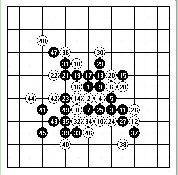

梦魂精彩的一局，绝杀出师局！你能目算么？白如何胜
首页
陕西连珠[西北狼棋社BBS]
#1 梦魂精彩的一局，绝杀出师局！你能目算么？白如何胜 作者：悟石 发表时间：2012-5-17 0:37:32

梦魂VS悟石
梦魂胜！
目算下下？
#2 Re:梦魂精彩的一局，绝杀出师局！你能目算么？白如何胜 作者：山城刀客 发表时间：2012-5-17 1:29:02
这样应该可以吧！
#3 Re:梦魂精彩的一局，绝杀出师局！你能目算么？白如何胜 作者：西北狼梦魂 发表时间：2012-5-17 1:56:21
 尽管知道师傅是放水的 不关还是很开心！
尽管知道师傅是放水的 不关还是很开心！ 先笑个半小时 ......... 因为师傅平时很忙 很少在网上下棋 所以机会难得 这局我下的很认真 说说我下棋的一些内心活动吧 想的有错误之处 望各位大师给予指点：首先 疏星开局 师傅给了这个5 不知道是几打 不过我经常走这个 还算会一点吧 我给出这个10 心里幻想着师傅能走这个13 因为这个我下的比较多 得到毒狼和梦姐指点过 如果师傅走这个变化 我想大错误我还是不会犯的。 可惜计划赶不上变化啊，师傅走了这个13 这里我担心了 这个13没见过 后面的只能靠自己了 面对师傅庞大的计算 我感觉只有死路一条了 这里想了很久 感觉走这个14 应该没有大的问题 首先 他只有一个眠三 虽然可以冲四和13取得联系做活三 可我当右 他没有好的攻击手段 结果做了个四三杀和右边有联系了 。这是我如果直接挡冲四点 他右边会有很强的进攻 经过常考 我算到了20手 如果21他冲三做四三杀 我下面有个冲四 可以制造禁手 于是就我冲三了 结果也按照我想的走到了20手 这里他走21冲 我22挡 他23.到这里 黑棋没有好的链接 我想试着进攻一下 把右边的做一个交换 于是给了一个不是骗的骗 虽然幻想着他不冲四 直接挡我 不过也知道这只是幻想 我的目的就是和他交换一下右边的棋 如果他不冲四 我有个抓禁手的手段 不过师父就是师父 这点雕虫小技怎么能骗到他呢 他冲四了 走到29手 到29手 我又思考了很久 我想进攻 又算不到杀 应该说离杀还很远 这是想棋了梦姐的话 下疏星 材料不足去进攻 那是找死 于是老实的防了他重要的一个连接点 他31跳活三 这里我又算了很久 第一感觉是当中间 算了一下上面 没看到杀 不过感觉联系很多 再说 我好好的三不活 跳一下 不会只为我们都加一颗字吧 于是想到了不老实的防 算了一下 我不老实 他下面也没什么好的棋 于是就走到了 36手 他走出37 我吓到了 做出来一个角 2个活二一个眠三 这里又不得不细算了 首先 我不挡这个眠三 这个眠三的作用很大 我辛苦做的长链 也要消失了 于是我挡住了这个眠三 这是也许是他担心我右边有进攻 也许他想从左边借点东西过来 具体的等待我师父来解释 嘿嘿 他走出39 我40应一步 这是他给出的41 又是两个活二 这时左边有四个活二了 时间不多了 容不得我多想 草草的给了e6这个42 师父说我走错了 一个观棋的说有VCT 仔细一看 还真可以V 于是换到现在的42 到45我想仔细算一下 不料 超时判负 复判 到这里继续算 首先 我老实防中间 他貌似没杀 可是我也没好的棋 他换可以做棋 我还是被动 我右挡 不老实 他有VCT 我没好的连接 可是我感觉这里反是个机会 很不甘心的 又算了一下 终于让我看到好点了 E11 做出自己的棋行 还有个连续冲四抓长链 于是我走出了46 不聊 他47占了我的点 哎 还好 我又看见我一个比较好的点了 不过我还看到了他的49 上防 这样我还是被动 结果师父走出了我预料之外的49 我的机会要来了 我50强抓长链 51必应 52活三 这里我现在还没明白 他上档我怎么杀 不过他和我幻想的走的一样 我的连接很多 不过我还要好好算 这时候我不允许出现一点失误 杀不了 我就要输 很小心的走到了59 这里他有个特型眠三的 下面有VCF了 我只能活60的三 盼望这他左当 结果失望了 我走出62 盼望他右挡 这样我可以抓长链 结果有失望了 这里我又算了 结果又超时了 我很不甘心的 又算了一下 还真被我看到杀了 就这样 这局棋下完了 中途有部分还不明白 望高手 给予指点
先笑个半小时 ......... 因为师傅平时很忙 很少在网上下棋 所以机会难得 这局我下的很认真 说说我下棋的一些内心活动吧 想的有错误之处 望各位大师给予指点：首先 疏星开局 师傅给了这个5 不知道是几打 不过我经常走这个 还算会一点吧 我给出这个10 心里幻想着师傅能走这个13 因为这个我下的比较多 得到毒狼和梦姐指点过 如果师傅走这个变化 我想大错误我还是不会犯的。 可惜计划赶不上变化啊，师傅走了这个13 这里我担心了 这个13没见过 后面的只能靠自己了 面对师傅庞大的计算 我感觉只有死路一条了 这里想了很久 感觉走这个14 应该没有大的问题 首先 他只有一个眠三 虽然可以冲四和13取得联系做活三 可我当右 他没有好的攻击手段 结果做了个四三杀和右边有联系了 。这是我如果直接挡冲四点 他右边会有很强的进攻 经过常考 我算到了20手 如果21他冲三做四三杀 我下面有个冲四 可以制造禁手 于是就我冲三了 结果也按照我想的走到了20手 这里他走21冲 我22挡 他23.到这里 黑棋没有好的链接 我想试着进攻一下 把右边的做一个交换 于是给了一个不是骗的骗 虽然幻想着他不冲四 直接挡我 不过也知道这只是幻想 我的目的就是和他交换一下右边的棋 如果他不冲四 我有个抓禁手的手段 不过师父就是师父 这点雕虫小技怎么能骗到他呢 他冲四了 走到29手 到29手 我又思考了很久 我想进攻 又算不到杀 应该说离杀还很远 这是想棋了梦姐的话 下疏星 材料不足去进攻 那是找死 于是老实的防了他重要的一个连接点 他31跳活三 这里我又算了很久 第一感觉是当中间 算了一下上面 没看到杀 不过感觉联系很多 再说 我好好的三不活 跳一下 不会只为我们都加一颗字吧 于是想到了不老实的防 算了一下 我不老实 他下面也没什么好的棋 于是就走到了 36手 他走出37 我吓到了 做出来一个角 2个活二一个眠三 这里又不得不细算了 首先 我不挡这个眠三 这个眠三的作用很大 我辛苦做的长链 也要消失了 于是我挡住了这个眠三 这是也许是他担心我右边有进攻 也许他想从左边借点东西过来 具体的等待我师父来解释 嘿嘿 他走出39 我40应一步 这是他给出的41 又是两个活二 这时左边有四个活二了 时间不多了 容不得我多想 草草的给了e6这个42 师父说我走错了 一个观棋的说有VCT 仔细一看 还真可以V 于是换到现在的42 到45我想仔细算一下 不料 超时判负 复判 到这里继续算 首先 我老实防中间 他貌似没杀 可是我也没好的棋 他换可以做棋 我还是被动 我右挡 不老实 他有VCT 我没好的连接 可是我感觉这里反是个机会 很不甘心的 又算了一下 终于让我看到好点了 E11 做出自己的棋行 还有个连续冲四抓长链 于是我走出了46 不聊 他47占了我的点 哎 还好 我又看见我一个比较好的点了 不过我还看到了他的49 上防 这样我还是被动 结果师父走出了我预料之外的49 我的机会要来了 我50强抓长链 51必应 52活三 这里我现在还没明白 他上档我怎么杀 不过他和我幻想的走的一样 我的连接很多 不过我还要好好算 这时候我不允许出现一点失误 杀不了 我就要输 很小心的走到了59 这里他有个特型眠三的 下面有VCF了 我只能活60的三 盼望这他左当 结果失望了 我走出62 盼望他右挡 这样我可以抓长链 结果有失望了 这里我又算了 结果又超时了 我很不甘心的 又算了一下 还真被我看到杀了 就这样 这局棋下完了 中途有部分还不明白 望高手 给予指点 ［ 悟石 于 2012-5-17 8:52:30 时花20金币送鲜花一朵］
［ 悟石 于 2012-5-17 8:53:14 时奖励此帖[金币加 100 威望加1］
#4 Re:梦魂精彩的一局，绝杀出师局！你能目算么？白如何胜 作者：山城刀客 发表时间：2012-5-17 2:05:22
如若53上挡，如上图抓44.
［ 悟石 于 2012-5-17 8:52:50 时花20金币送鲜花一朵］
［ 西北狼梦魂 于 2012-5-17 9:28:22 时花20金币送鲜花一朵］
#5 Re:梦魂精彩的一局，绝杀出师局！你能目算么？白如何胜 作者：西北狼梦魂 发表时间：2012-5-17 10:42:22
昨天顾着高兴 没注意 题目怎么叫梦魂 出师局 不要我了
［ 西北狼梦天 于 2012-5-20 12:12:11 时花20金币送鲜花一朵］
#6 Re:梦魂精彩的一局，绝杀出师局！你能目算么？白如何胜 作者：西北狼梦依 发表时间：2012-5-17 12:40:28
出师了，厉害。支持一下
#7 Re:梦魂精彩的一局，绝杀出师局！你能目算么？白如何胜 作者：雅匪 发表时间：2012-5-19 22:36:02
一个字一个字看了，感到又惊又喜还有一点儿怕――梦魂都知道这么多、想得这么多、算得这么多了，这……这，这以后可咋得了啊
#8 Re:梦魂精彩的一局，绝杀出师局！你能目算么？白如何胜 作者：西北狼梦魂 发表时间：2012-5-19 23:20:06
我知道的 都是皮毛 和你们差距还很大呢 我会好好努力的
#9 Re:西北狼梦魂【==Re:梦魂精彩的一局，绝杀出师局！你能目算么？白如何胜==】 作者：西北狼梦天 发表时间：2012-5-20 12:14:05
梦魂加油！！
#10 Re:雅匪【==Re:梦魂精彩的一局，绝杀出师局！你能目算么？白如何胜==】 作者：悟石 发表时间：2012-5-21 10:47:49
引用：
原文由 雅匪 发表于 2012-5-19 22:36:02 :
一个字一个字看了，感到又惊又喜还有一点儿怕――梦魂都知道这么多、想得这么多、算得这么多了，这……这，这以后可咋得了啊
给点评一下?